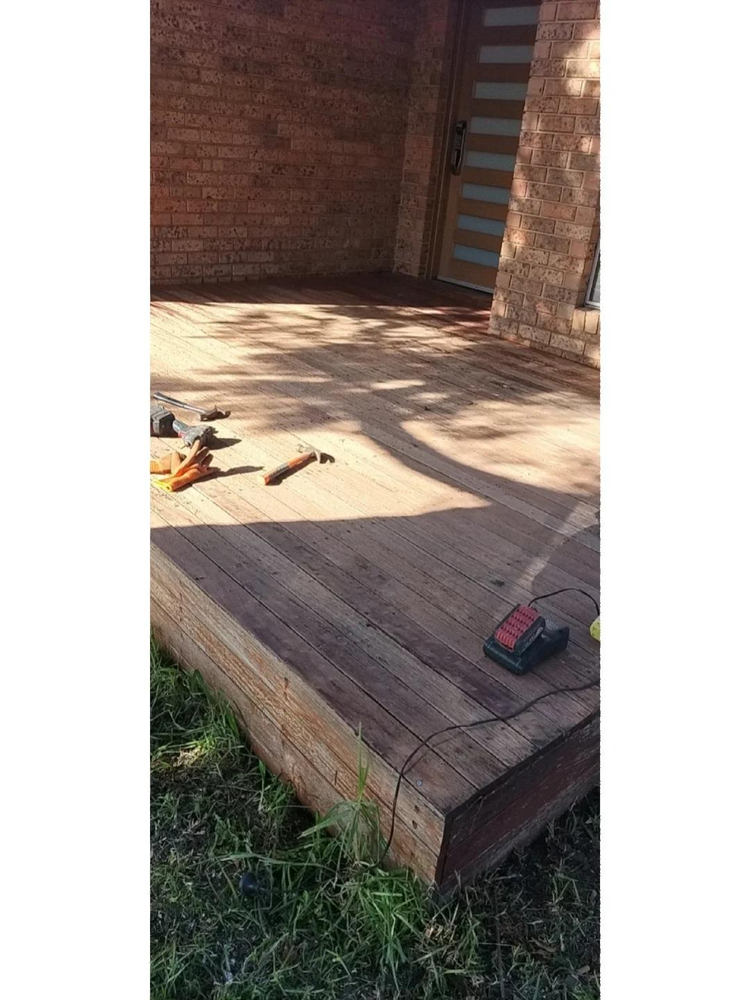
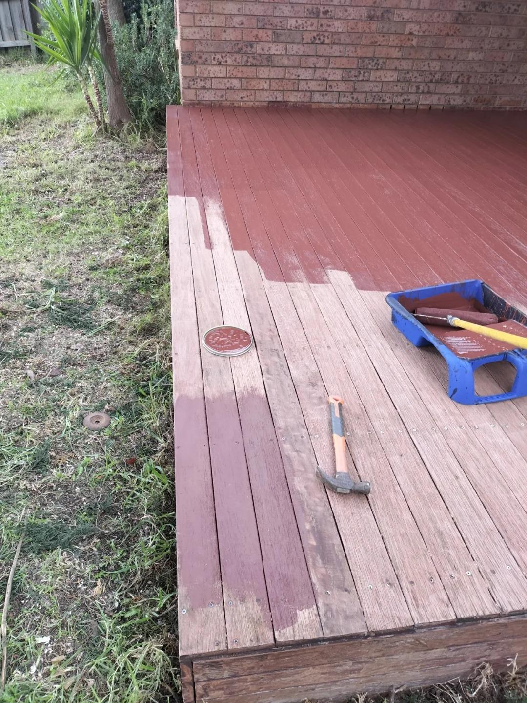
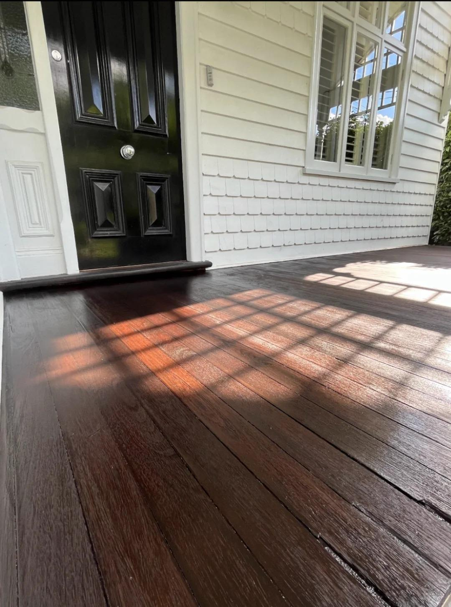

Work examples
Decking refinishing & maintenance examples
A visual reference for common timber-deck preparation, coating and finished outdoor surfaces.
How to read these examples
Preparation, coating and completed surfaces
These images are examples, not a single before-and-after project sequence. Together they show decking surface preparation, coating application and different completed timber deck settings.
Share a wide view of the deck, close-ups of any weathered boards or fixings, and the access route when you contact us. That helps us understand the condition and the work to be scoped.
Example gallery
Decking work shown across different settings




Start your request
Tell us about your deck
Share your deck condition, Perth property location and a few photos to start the conversation.